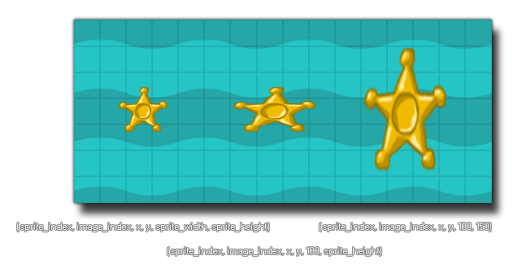

draw_sprite_stretched(sprite, subimg, x, y, w, h);
| Argument | La description |
|---|---|
| sprite | L'index du sprite à dessiner. |
| subimg | Le subimg (cadre) de l'image-objet à dessiner (image_index ou -1 correspond à l'image courante de l'animation dans l'objet). |
| x | La coordonnée x de l'endroit où dessiner le sprite. |
| y | La coordonnée y de l'endroit où dessiner le sprite. |
| w | La largeur de la zone occupée par le sprite étiré. |
| h | La hauteur de la zone occupée par le sprite étiré. |
Retours: N / A
Cette fonction prend simplement une ressource de sprite et l'étire sur la largeur et la hauteur données pour qu'elle occupe la zone. Comme avec draw_sprite vous pouvez spécifier un sprite et une sous-image pour le dessin, puis la position x / y dans la pièce pour que l'image-objet soit dessinée et enfin une largeur et une hauteur (qui doivent être des valeurs de pixels). L'image ci-dessous illustre le fonctionnement de cette fonction: 
draw_sprite_stretched(sprite_index, image_index, x, y, sprite_width / 2, sprite_height / 2);
Cela va dessiner les instances assignées sprite et sa sous-image avec le coin gauche à la position de l'instance x / y. Sa largeur est la même que celle de l'image-objet, et la hauteur est la hauteur de l'image-objet divisée par deux.